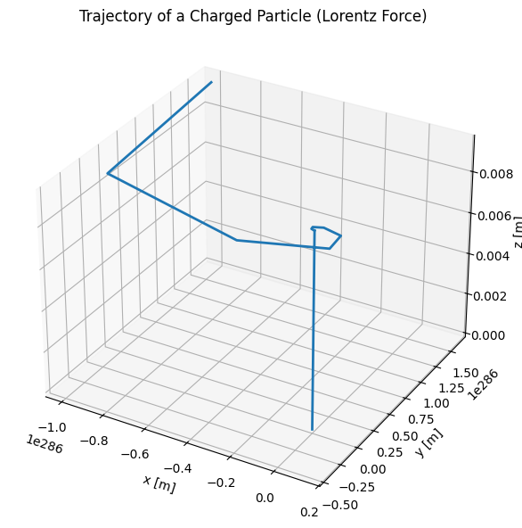

Problem 1
⚡ Electromagnetism: Lorentz Force Simulation
🧲 Motivation
The Lorentz force determines the motion of a charged particle in electric and magnetic fields:
This principle governs systems such as: - Cyclotrons & Synchrotrons (particle accelerators) - Mass spectrometers - Plasma confinement in tokamaks - Astrophysical jets and solar wind interactions
By simulating this force, we gain intuitive insight into how fields control particle motion in real applications.
🔧 Task Overview
1. Applications of Lorentz Force
| System | Role of E and B fields |
|---|---|
| Cyclotron | Uses a B field to bend paths and an E field to accelerate particles |
| Mass Spectrometer | Separates particles based on mass-to-charge ratio using B field |
| Plasma Confinement | Magnetic fields trap hot plasma in fusion devices like tokamaks |
2. Particle Motion Simulation
We solve:
Using numerical integration (Euler or Runge-Kutta), we simulate 3 cases:
- Uniform magnetic field (circular/helical motion)
- Uniform electric + magnetic fields (helical drift)
- Crossed \( \vec{E} \perp \vec{B} \) fields (E × B drift)
🧮 Python Code
import numpy as np
import matplotlib.pyplot as plt
from mpl_toolkits.mplot3d import Axes3D
# Physical constants and particle properties
q = 1.6e-19 # charge [C]
m = 9.11e-31 # mass [kg] (electron)
E = np.array([0, 0, 0]) # Electric field [V/m]
B = np.array([0, 0, 1]) # Magnetic field [T]
v0 = np.array([1e6, 0, 1e6]) # Initial velocity [m/s]
r0 = np.array([0, 0, 0]) # Initial position [m]
# Simulation parameters
dt = 1e-11 # time step [s]
steps = 1000
# Initialize arrays
r = np.zeros((steps, 3))
v = np.zeros((steps, 3))
r[0] = r0
v[0] = v0
# Euler method to simulate motion
for i in range(steps - 1):
F = q * (E + np.cross(v[i], B))
a = F / m
v[i+1] = v[i] + a * dt
r[i+1] = r[i] + v[i+1] * dt
# Plotting 3D trajectory
fig = plt.figure(figsize=(10, 6))
ax = fig.add_subplot(111, projection='3d')
ax.plot(r[:, 0], r[:, 1], r[:, 2], lw=2)
ax.set_xlabel('x [m]')
ax.set_ylabel('y [m]')
ax.set_zlabel('z [m]')
ax.set_title('Trajectory of a Charged Particle (Lorentz Force)')
plt.tight_layout()
plt.show()

⚙️ Parameter Exploration
You can experiment with different parameters to observe how they affect the particle's motion:
-
Magnetic Field (
B):- Set
B = [0, 0, 1]to observe circular/helical motion. - Try reversing the field direction (
B = [0, 0, -1]) to see the impact on trajectory direction.
- Set
-
Electric Field (
E):- Add
E = [1e5, 0, 0]withB = [0, 0, 1]to generate drift motion. - Use crossed fields to observe the E × B drift.
- Add
-
Initial Velocity (
v0):- Aligned with
B→ pure helical path. - Perpendicular to
B→ circular motion. - Oblique → spiral motion.
- Aligned with
-
Mass and Charge:
- For protons:
m = 1.67e-27 kg,q = 1.6e-19 C - For electrons:
m = 9.11e-31 kg,q = -1.6e-19 C
- For protons:
📌 Important Concepts
🔁 Larmor Radius (Cyclotron Radius):
The radius of the circular path a charged particle follows in a magnetic field.
🔁 Cyclotron Frequency:
Describes how quickly the particle rotates around the magnetic field lines.
🔁 E × B Drift Velocity:
In crossed electric and magnetic fields, particles drift in a direction perpendicular to both.
📊 Results & Applications
| Field Configuration | Motion Type | Real-world Application |
|---|---|---|
| $$\vec{B} $$only | Circular / Helical | Cyclotrons, magnetic confinement in plasmas |
| $$ \vec{E} + \vec{B} $$ | Helical + Drift | Plasma propulsion, charged beam control |
| $$ \vec{E} \perp \vec{B} $$ | E × B Drift | Hall effect sensors, mass spectrometers |
✅ Conclusion
The Lorentz force provides a powerful model for understanding the dynamics of charged particles in electromagnetic fields. By simulating their motion:
- We can visualize complex paths like spirals, drifts, and circular orbits.
- These insights help explain mechanisms in fusion reactors, spacecraft propulsion, and astrophysical phenomena.
- Tuning parameters such as charge, mass, field strengths, and initial velocities enables exploration of diverse behaviors.
Simulations like these are essential tools in both education and real-world physics and engineering applications.